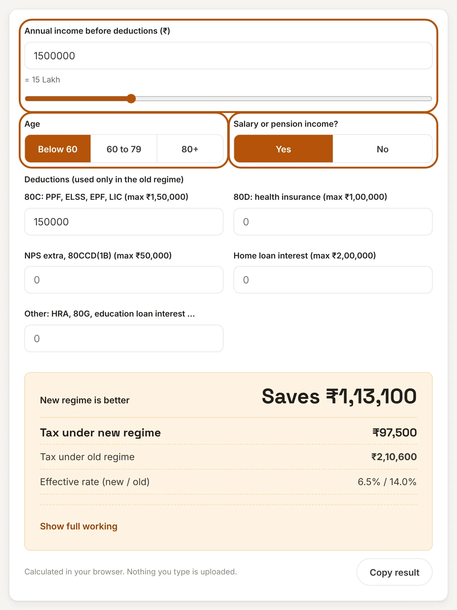
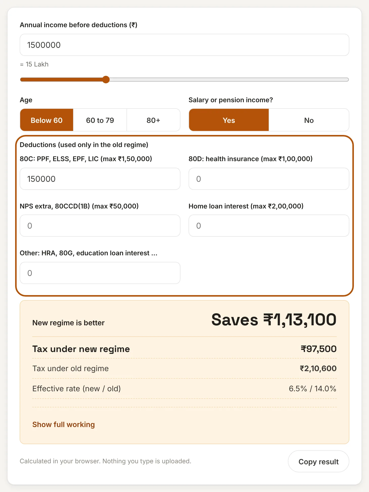
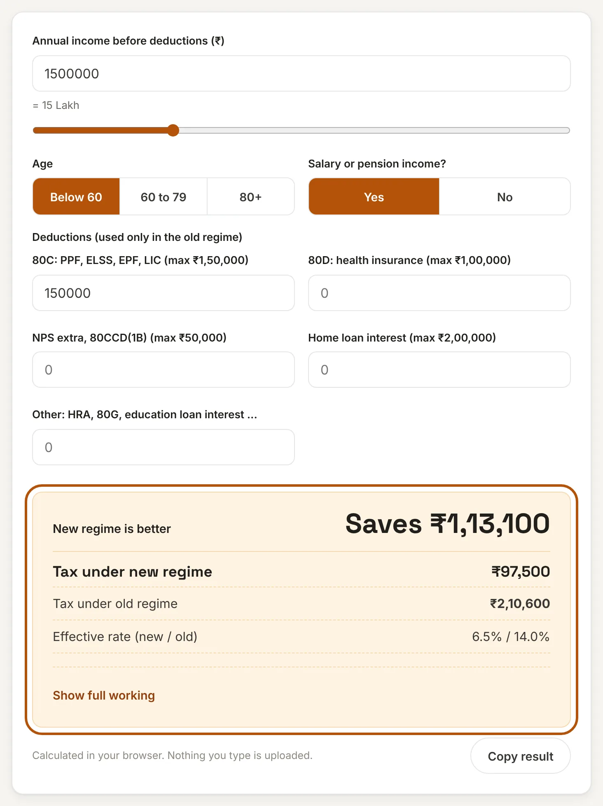
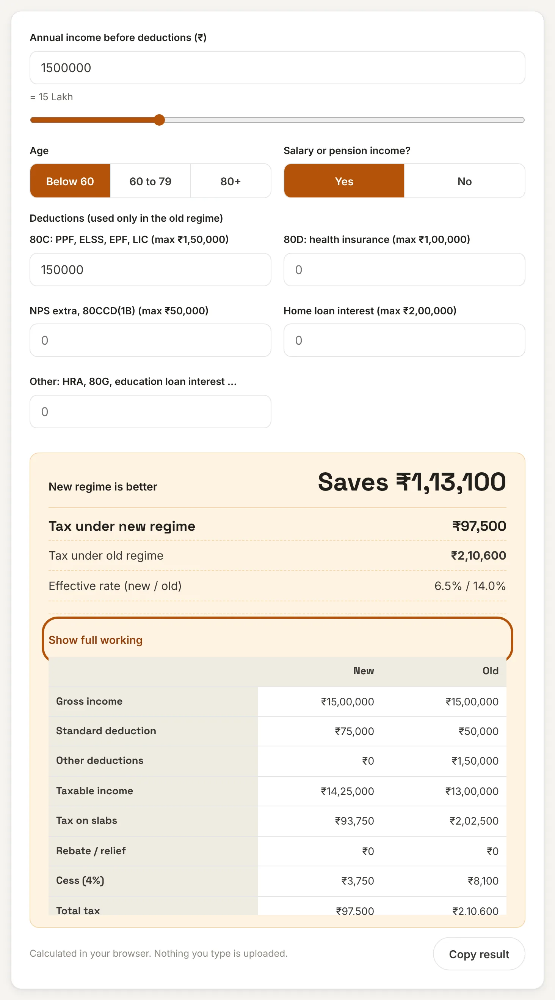

What is an income tax calculator?
Since April 2024 most salaried people in India have had to choose between two ways of paying income tax: the new regime with lower slab rates and almost no deductions, and the old regime with higher rates but deductions such as 80C, 80D, home loan interest and HRA. Which one costs less depends on your income and on how much you can deduct.
This income tax calculator does the comparison for you. Enter your income, your age group and your deductions, and it works out the tax under both regimes for FY 2026-27 and tells you which one saves more and by how much.
How to use this income tax calculator
Step 1: Enter your income and age group
Type your total yearly income before any deduction, or drag the slider. Choose your age group, because the old regime has a higher tax-free limit for senior citizens (60 to 79) and super senior citizens (80 and above). Tell it whether you earn salary or pension, since that decides whether the standard deduction applies.

Step 2: Add your deductions
Fill in what you invest or pay under each head. These deductions count only in the old regime, so leave them empty if you do not claim them. Each box shows its limit.

Step 3: See which regime wins
The top line says which regime saves you more tax and the exact amount. Below it you see the total tax under each regime, including the 4% cess, and your effective tax rate.

Step 4: Open the full working
Choose Show full working to see taxable income, tax on slabs, rebate or relief and cess for both regimes side by side. Use Copy result to save a summary.

Tax slabs for FY 2026-27
These are the slabs used by the calculator for resident individuals below 60. The slabs for FY 2026-27 are the same as for FY 2025-26.
| New regime income | Rate | Old regime income | Rate |
|---|---|---|---|
| Up to ₹4,00,000 | Nil | Up to ₹2,50,000 | Nil |
| ₹4,00,001 to ₹8,00,000 | 5% | ₹2,50,001 to ₹5,00,000 | 5% |
| ₹8,00,001 to ₹12,00,000 | 10% | ₹5,00,001 to ₹10,00,000 | 20% |
| ₹12,00,001 to ₹16,00,000 | 15% | Above ₹10,00,000 | 30% |
| ₹16,00,001 to ₹20,00,000 | 20% | ||
| ₹20,00,001 to ₹24,00,000 | 25% | ||
| Above ₹24,00,000 | 30% |
In the old regime the tax-free limit is ₹3,00,000 for ages 60 to 79 and ₹5,00,000 for 80 and above. On top of the tax, a 4% health and education cess is added. The standard deduction for salary and pension is ₹75,000 in the new regime and ₹50,000 in the old regime.
The rebate that makes income up to ₹12 lakh tax-free
Under the new regime the Section 87A rebate cancels the whole tax if your taxable income is ₹12,00,000 or less. A salaried person gets there at a gross income of ₹12,75,000, because the ₹75,000 standard deduction comes off first. Just above the limit, marginal relief makes sure your tax is never more than the income above ₹12 lakh. At a gross income of ₹12,80,000, for example, the slab tax is ₹60,750, but relief limits it to ₹5,000 and the total with cess is ₹5,200. The calculator applies this automatically.
In the old regime the rebate is ₹12,500 and works only if taxable income is ₹5,00,000 or less. There is no marginal relief.
Worked examples: new vs old regime
These examples are for a salaried person below 60 who claims only ₹1,50,000 under Section 80C in the old regime.
| Income | New regime tax | Old regime tax | Better |
|---|---|---|---|
| ₹7,00,000 | ₹0 | ₹0 | Same |
| ₹10,00,000 | ₹0 | ₹75,400 | New saves ₹75,400 |
| ₹12,00,000 | ₹0 | ₹1,17,000 | New saves ₹1,17,000 |
| ₹15,00,000 | ₹97,500 | ₹2,10,600 | New saves ₹1,13,100 |
| ₹20,00,000 | ₹1,92,400 | ₹3,66,600 | New saves ₹1,74,200 |
| ₹30,00,000 | ₹4,75,800 | ₹6,78,600 | New saves ₹2,02,800 |
When does the old regime win?
The old regime pays off only if your deductions are large. For a salaried person, the old regime matches the new one at about these total deductions (not counting the standard deduction):
- ₹15 lakh income: about ₹5.5 lakh of deductions
- ₹20 lakh income: about ₹7.1 lakh of deductions
- ₹30 lakh income: about ₹8 lakh of deductions
The 80C limit is ₹1.5 lakh, so you need HRA, a home loan, NPS and health insurance on top of it to get there. For example, at ₹30 lakh income with ₹1.5 lakh in 80C, ₹50,000 in NPS, ₹2 lakh of home loan interest and ₹5 lakh of HRA and other deductions, the old regime costs ₹4,44,600 against ₹4,75,800 under the new regime, a saving of ₹31,200.
What this calculator does not cover
It is built for resident individuals with income up to ₹50 lakh. It does not add surcharge (which applies above ₹50 lakh), and it does not handle capital gains at special rates, HUF, business income, or employer NPS contributions under the new regime. Taxable income and final tax are rounded to the nearest ₹10, as on your tax return. Use the result to compare regimes, and confirm the final figure on the income tax portal or with a tax professional.
Frequently asked questions
Which tax regime is better for me?
For most people with income up to about ₹20 lakh the new regime costs less unless total deductions are very large. Enter your own figures above and the calculator shows which regime wins and by how much.
Is income up to ₹12 lakh really tax-free?
Yes, under the new regime, if your taxable income is ₹12,00,000 or less the Section 87A rebate cancels the tax. For a salaried person the gross income can be up to ₹12,75,000 because of the ₹75,000 standard deduction. This does not cover income taxed at special rates such as capital gains.
Can I claim 80C in the new regime?
No. The new regime allows almost no deductions apart from the standard deduction, so 80C, 80D, HRA and home loan interest on a self-occupied house count only in the old regime.
What is marginal relief?
If your taxable income is just above ₹12 lakh, marginal relief limits your tax to the amount by which your income exceeds ₹12 lakh, so a small rise in income never makes you pay more tax than the extra income itself.
Can I switch between old and new regime every year?
Salaried people without business income can choose a regime each year when they file their return. Taxpayers with business income have much tighter rules for switching back, so check with a tax professional.
Is my data sent to a server?
No. This tool runs entirely in your browser. What you enter is never uploaded or stored.
Disclaimer: This tool gives estimates for comparison and is not tax, financial or legal advice. Tax rules change with each Budget. Check the latest rules on the income tax portal before you file. See our disclaimer.